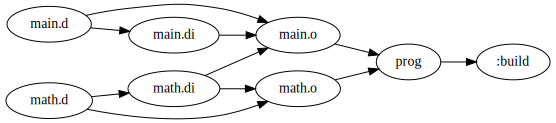

A new feature in Knit
I’ve been writing a build tool called Knit (I’ve written a blog post about it here). In Knit v1.1.0 there is a new feature I’m calling “dynamic task elision”, which allows Knit to skip a build step if, at the time when it tries to run the task, it can determine that out-of-date prerequisites that got rebuilt ended up not changing anything. This is possible thanks to Knit’s support for hash-based file modification detection (and is not possible if this feature is disabled).
Here’s an example: say you have a C file (foo.c) and the following Knitfile:
return b{
$ foo: foo.o
gcc $input -o $output
$ foo.o: foo.c
gcc $input -c -o $output
}
Running knit would perform:
$ knit
gcc foo.c -c -o foo.o
gcc foo.o -o foo
Now if you add a comment to foo.c and re-build, Knit will dynamically determine
that the linking step can be skipped because the generated object file is actually
equivalent to what it was on the previous run.
$ micro foo.c # add a comment to foo.c
$ knit
gcc foo.c -c -o foo.o
The linking step is elided thanks to this optimization. We can use this optimization along with D interface files to design builds for D programs that are incremental and parallel (just as incremental/parallel as a C build) without manually writing header files.
D interface files
D doesn’t have header files, which means the language doesn’t force you do separate out a module’s implementation from its interface. However, this separation is useful for incremental builds because it allows the build to skip recompilation of dependent modules if only module’s implementation changes (the module can only be used via its interface, so modules that import it don’t need to be recompiled if some hidden details in the implementation change). Recompilation of dependent modules should only happen when interfaces change. Since D doesn’t force you to write out the interface in a separate file, it’s hard to determine when the interface has changed (you can’t just check if the interface file changed, since it doesn’t exist).
Luckily, D does have interface
files (.di files) that can
be auto-generated from normal .d files. For example, if foo.d contains:
int foo() {
return 42;
}
then we can generate a .di file like so:
$ gdc -fsyntax-only -Hf foo.di foo.d
foo.di will contain:
// D import file generated from 'foo.d'
int foo();
Now even if we change foo’s return value, the D interface file will be
unchanged. We can use this, along with Knit’s dynamic task elision to
write builds for D programs that are highly incremental.
Incremental and parallel D compilation
Here’s a small Knitfile for D programs that will build them incrementally and in parallel:
knit = require("knit")
local src = knit.rglob(".", "*.d")
local obj = knit.extrepl(src, ".d", ".o")
return b{
$ prog: $(obj)
gdc $input -o $output
$ %.di: %.d
gdc -fsyntax-only -Hf $output $input
$ %.o:D[%.dep]: %.d %.di[I]
gdc -MM -MF $dep -MT $output -c $input -o $output
}
The interesting rule is the one for .o files:
$ %.o:D[%.dep]: %.d %.di[I]
gdc -MM -MF $dep -MT $output -c $input -o $output
(note: the [I] attribute on %.di input indicates that the dependency is
implicit and should not be part of the $input variable)
This rule says that to build a .o file, the system must have the
corresponding .d and .di files for it (this causes the .di to rebuild if
necessary, using the %.di rule). It also says that a .dep dependency file
is created and should be read to find additional prerequisites. This file will
be generated by GDC by passing the -MM -MF $dep -MT $output flags (the $dep
special variable is just whatever %.dep becomes when matched). Using dynamic
task elision, if Knit determines that the .di file of a prerequisite
(probably listed in the .dep file) has not changed, then it will skip
generation of the object file.
Let’s look at a concrete example. I have a simple math module in math.d:
module math;
int square(int x) {
return x * x;
}
Then in a main module in main.d I use the math module:
module main;
import math;
import std.stdio;
void main() {
writeln(square(4));
}
Running Knit with the Knitfile from above runs:
$ knit
gdc -fsyntax-only -Hf main.di main.d
gdc -fsyntax-only -Hf math.di math.d
gdc -MM -MF math.dep -MT math.o -c math.d -o math.o
gdc -MM -MF main.dep -MT main.o -c main.d -o main.o
gdc main.o math.o -o prog
$ ./prog
16
(note: the generation of .di files runs in parallel, and the generation of
.o files also runs in parallel)
This produces the math.di file:
// D import file generated from 'math.d'
module math;
int square(int x);
and the main.dep file, which captures that main imports math, and
therefore depends on the math.di file:
main.o: main.d math.di
Here’s a visualization of the build graph (generated with knit -t graph pdf):

Now we can modify square to do something different:
// not square anymore
int square(int x) {
return x;
}
Rebuilding runs the following commands:
$ knit
gdc -fsyntax-only -Hf math.di math.d
gdc -MM -MF math.dep -MT math.o -c math.d -o math.o
gdc main.o math.o -o prog
$ ./prog
4
Of the object files, only math.o got rebuilt. This is because even though math.di was
out-of-date and is a prerequisite of main.o, when math.di got re-generated, Knit
dynamically saw that nothing in it changed, and therefore main.o in fact did not need
to be rebuilt. You can see this information in debug mode with the -D flag:
$ knit -D
gdc -fsyntax-only -Hf math.di math.d
gdc -MM -MF math.dep -MT math.o -c math.d -o math.o
[debug] [main.o] elided
gdc main.o math.o -o prog
Knit informs us that the build step for main.o was elided.
However, if we change square’s interface, with a modification like this:
ulong square(ulong x) {
return x * x;
}
Then a rebuild will recompile main.o as well (since now the .di file has
actually changed):
$ knit
gdc -fsyntax-only -Hf math.di math.d
gdc -MM -MF math.dep -MT math.o -c math.d -o math.o
gdc -MM -MF main.dep -MT main.o -c main.d -o main.o
gdc main.o math.o -o prog
In this small example, the optimization doesn’t have a big effect. But for a large project it would, since it would guarantee that changing a function’s implementation will only cause that single file to be re-compiled, even if that module is imported in many places.
LDC example
The previous Knitfile works with GDC. If you want to use LDC, here is an equivalent version:
knit = require("knit")
local src = knit.rglob(".", "*.d")
local obj = knit.extrepl(src, ".d", ".o")
return b{
$ prog: $(obj)
ldc2 $input -of $output
$ %.di: %.d
ldc2 -Hf $output -c $input -o-
$ %.o:D[%.dep]: %.d %.di[I]
ldc2 -makedeps=$dep -c $input -of $output
}
LDC doesn’t have a -fsyntax-only flag and I’m not sure if -o- causes
the object file to not be compiled at all, or just causes it to not be
written to the filesystem.
Putting generated files in a hidden location
I prefer not polluting the source directory with .di, .dep, and .o
files so I like to put these files in a hidden directory called .build.
One consequence of this is that the compiler will need to be given this
directory as an import path, so that it can generate .dep files that
reference the .di files there. Annoyingly, it seems like D compilers
magically include the current directory as the highest priority import path.
This is troublesome because it means the .d files in the current directory
will have higher priority over the .di files in .build when generating
dependency information for .dep. As a result, I put my source code in a src
directory to avoid this. Possible solutions in the future could be to have the
current directory be the lowest priority, or to include a flag to remove the
current directory from the search path (still allowing it to be manually added
with -I. with the correct priority).
Here’s an example updated Knitfile that puts the build files in .build and
reads the sources from src:
knit = require("knit")
local build = ".build"
local src = knit.rglob("src", "*.d")
local obj = knit.prefix(knit.extrepl(src, ".d", ".o"), build .. "/")
return b{
$ prog: $(obj)
gdc $input -o $output
$ $build/%.di: %.d
gdc -I$build/src -Isrc -fsyntax-only -Hf $output $input
$ $build/%.o:D[$build/%.dep]: %.d $build/%.di[I]
gdc -I$build/src -Isrc -MM -MF $dep -MT $output -c $input -o $output
}
Another solution would be to put the Knitfile in a build directory and set up
an “out-of-tree” build.
Templates
Templated code automatically becomes a part of the interface. This is because the caller must know the implementation in order to instantiate the template properly. Thus, templated code won’t benefit much from this incremental approach (modifying templated code will always cause all modules that import it to be rebuilt).
For example, this function:
T square(T)(T x) {
return x * x;
}
causes the following to be generated in the .di file:
T square(T)(T x)
{
return x * x;
}
Clearly, if we modify the function’s implementation, the interface file will also change.
Areas for improvements in D interface files
D interface files aren’t as strict as they could be. They include extra information that expose module details unnecessarily. This can cause unnecessary rebuilds. Here’s a list of things I’ve noticed:
-
D interfaces include private definitions. Private definitions are not accessible outside the module, so they do not need to be included in a module’s interface, but D includes them anyway. Maybe they are included so D can provide better error messages (“error:
xis private”, instead of “error:xdoes not exist”), but I’m not sure if this is the right tradeoff (error messages vs. incrementality). -
D interface files include import information. Imported modules are sometimes only used within a function implementation, so those imports would not need to be a part of the interface. One solution is to import those modules only within function implementations, so they are not exposed, but this can get annoying if used in multiple functions (then you probably want to import at the higher scope, which will cause the import to become exposed).
-
D interface files include the names of arguments. In the
squareexample from above, the signature wasint square(int x). If the math module changed the argument name toy, the function interface is still the same, but would unecessarily trigger a recompile. Note: if D gets named argument function calling, then including this information will be necessary anyway.
Edit: as explained in this
message private
definitions and imports need to be included in .di files because of
templates.
Link-time optimization
Generating lots of object files is good for incremental and parallel builds.
However, it prevents the compiler from optimizing across modules. The square
function from the math module won’t be inlined into main because the
compiler doesn’t see its implementation when compiling main. There are a
few solutions to this:
- Use lots of objects for development builds, and a unified build for
releases. If you pass all the
.dfiles to the compiler, it will compile everything together – bad for parallel/incremental, but good for optimizing, since the compiler sees everything at once. - Use link-time optimization (LTO) to allow the linker to invoke the compiler during linking.
I’ll describe the second approach in more detail because I think it does a
better job at preserving parallelism/incrementality while still providing good
optimizations (often even stronger optimizations than with a unified build).
Setting up link-time optimization with GDC is as simple as adding -flto
to the compile and link rules (and of course we have to turn on optimizations
with -O2).
knit = require("knit")
local src = knit.rglob(".", "*.d")
local obj = knit.extrepl(src, ".d", ".o")
return b{
$ prog: $(obj)
gdc $input -o $output -flto -O2
$ %.di: %.d
gdc -fsyntax-only -Hf $output $input
$ %.o:D[%.dep]: %.d %.di[I]
gdc -MM -MF $dep -MT $output -c $input -o $output -flto -O2
}
Now if you compile and inspect the disassembly, you’ll notice that the call to
square has been omitted, and the compiler has replaced it with a direct print
of the constant 16.
With LDC, you just have to add -O2 -flto=thin (you can also use -flto=full for
a slower but more complete optimization pass).
Conclusion
I think this is a nice setup for efficient, parallel, and incremental builds with D. It doesn’t seem like this is a widely used approach though – as far as I can tell, Dub does not do this. Hopefully this post clarifies how to set this up, and maybe this can be implemented in the future in Dub so that everyone can more easily benefit from faster incremental builds (or you can just use Knit!).